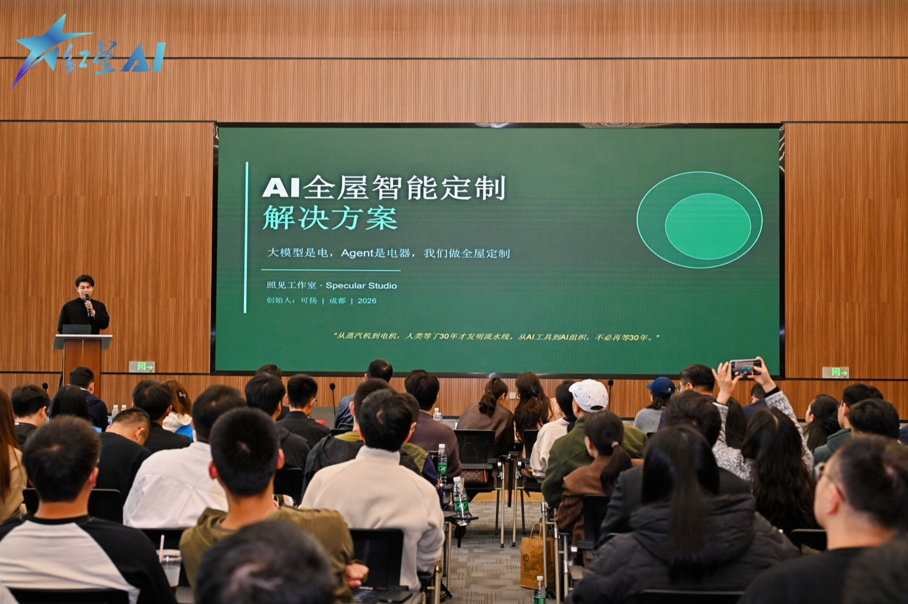
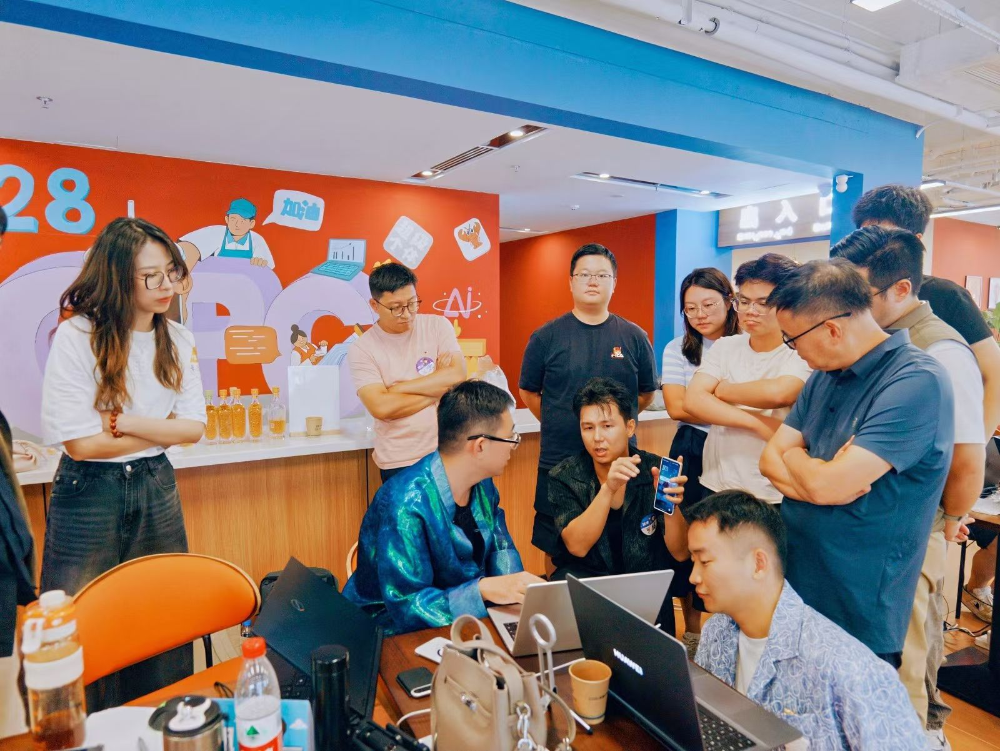
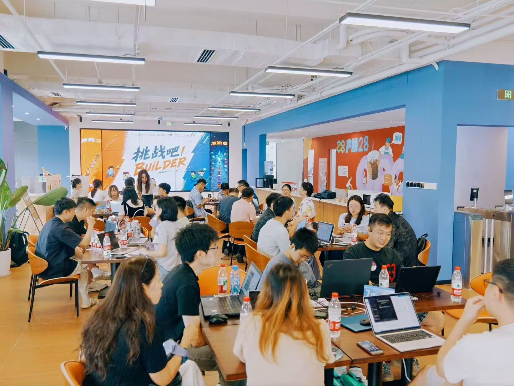
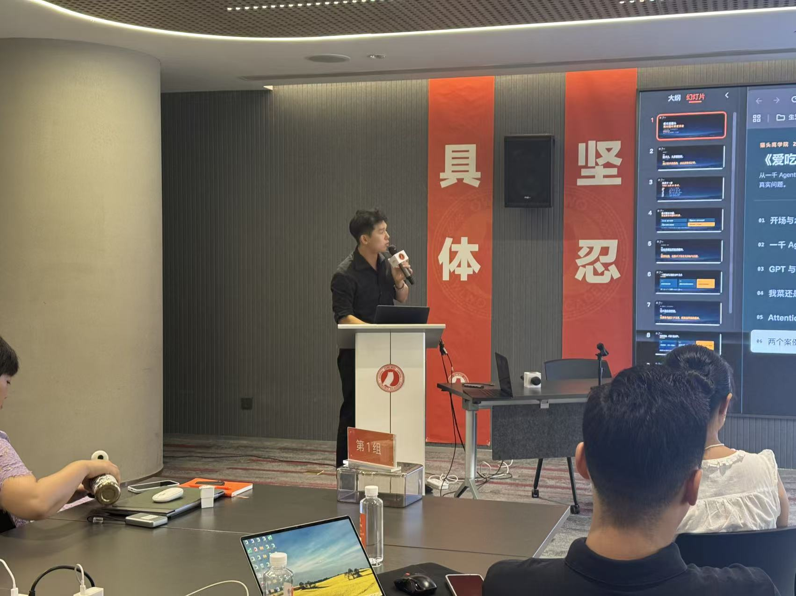
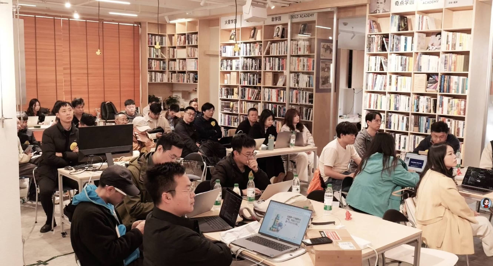
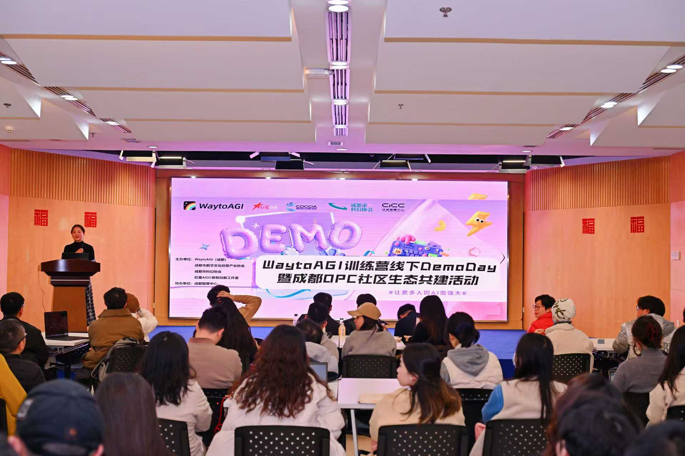
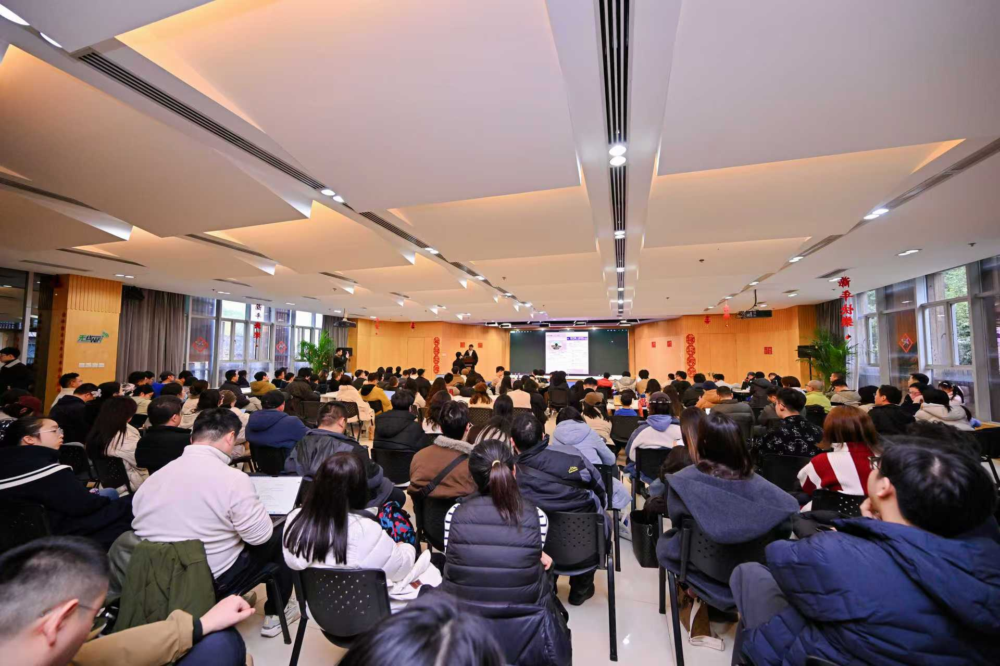

冷链
采购商机监测
为冷链企业开发采购公告监测工具，汇集分散的公告，整理新增机会和后续变更，帮助业务人员筛选、跟进项目。
你现在更关心哪一件？选择后看服务与样例
01想用 AI，还没定从哪儿做企业 AI 首诊 先排出轻重缓急 02客户问 AI，能找到我的公司吗GEO 诊断 查搜索与 AI 回答 03想让员工在工作里用起来企业 AI 培训 按岗位动手练直接和创始人沟通你的需求。雷可扬 · 大衍千机创始人
以下是我们参与过的部分行业项目。
为冷链企业开发采购公告监测工具，汇集分散的公告，整理新增机会和后续变更，帮助业务人员筛选、跟进项目。
梳理赛事方案、标书和物料的校对流程，设计时间、名称与版本的交叉检查工具，方便团队在交付前发现问题。
设计产品选配与询价页面，把图片、材质、配色和搭配资料放在一起，方便买家比较产品、提出采购需求。
完成门店官网与公开信息诊断，整理地址、产品、服务和常见问答的修改内容，补齐顾客找店、选产品需要的信息。
设计电商内容制作流程和交互演示，将找货、视频参考、脚本拆解与成片步骤连接起来，明确各环节的工作。
围绕客户理解、业务介绍和沟通跟进，梳理适合使用 AI 的工作，帮助团队确定应用方向。
你的企业也有类似需求？和我们聊聊。
预约需求沟通服务介绍
首诊、GEO 诊断和培训均可单独选择。
需要进一步实施，也有相应的开发与交接服务。
适合：方向还没定，或买了工具却用不起来
梳理获客、销售和日常办公中的重复劳动与信息遗漏，结合团队的现有条件，给出 AI 应用的优先顺序和实施建议。
一两件最想改善的工作、现在怎么做、涉及哪些岗位。已经买过的工具也可以一起看；初次沟通不必发送内部原始资料。
以销售整理客户需求为例，展示首诊如何确定应用方向、实施优先级和下一步安排。
适合：希望客户更容易在搜索和 AI 问答中找到公司
围绕客户找产品、选供应商时会问的问题，查看搜索结果和 AI 回答，找出官网、自媒体与第三方介绍中缺失、过时或不一致的信息。
后续可继续安排官网优化、内容撰写、媒体发布与定期巡检。
了解 GEO 诊断与后续优化 → 预约GEO沟通公司名、现有公开介绍或官网、客户常问的几个问题。有希望检查的平台，可以一起说明。查询范围和费用在开始前确认。
以包装供应商为例，展示客户问法、公开信息缺口和相应的内容优化建议。
适合：想让员工学会用 AI 完成本职工作
销售练方案，行政练会议整理，运营练内容与表格。围绕岗位任务安排实操，既学怎么生成，也学怎么修改和核对结果。
哪些岗位参加、大致人数、想练的任务，以及可用的工具。练习材料应先确认使用权限并脱敏，不直接上传客户或员工敏感信息。
以会议整理为例，练习提取负责人、任务和截止时间，并核对、修改 AI 的输出。
培训与分享现场
企业内训、主题分享与现场交流 · 点击照片查看大图







完整服务流程
从业务梳理到系统实施、岗位培训和后续维护，可以根据当前需要选择服务。点击查看两类合作流程。
梳理当前业务，找出适合使用 AI 的工作，给出优先顺序和起步建议。
进一步了解岗位分工、业务规则和现有系统，形成实施方案。
选择一条流程，用实际业务材料测试做法，明确结果要求与人工复核环节。
工程师与业务团队共同开发、连接现有系统，完成试运行和调整。
教会员工日常操作、结果核对和异常处理，交接操作说明与责任分工。培训也可独立安排。
根据实际使用情况修正问题，判断是否适合推广到更多岗位或流程。
各项服务可按需要选择；培训也可单独安排。
了解 FDE 如何实施与交接 →阅读服务完整说明 →围绕客户找产品、选供应商的问题，查看搜索结果与 AI 回答，保留查询记录与引用来源。
补充业务介绍、产品与服务信息，优化页面结构和联系入口。现有网站能用，就在原有基础上调整。
整理客户常问的问题，制作官网文章、问答和自媒体内容，由业务负责人确认事实后发布。
选择与行业、受众相符的媒体，安排内容发布并留存链接；发布、收录与 AI 引用分别跟踪。
复查搜索和 AI 回答中的信息变化，更新过时内容，并结合真实咨询情况调整后续工作。
各项服务可按需要选择；培训也可单独安排。
阅读服务完整说明 →关于大衍
从业务沟通、方案设计到实施与培训，
围绕你想解决的问题开展合作。
直接沟通的人
大衍千机创始人
常见问题
服务范围、费用和时间安排，
会在正式开始前与你确认。
可以。说说公司做什么、现在想改善哪件事就行。方向还不清楚，可以了解首诊；已有明确搜索诊断或培训需求，也可以直接沟通那一项，不必先买首诊。
根据要解决的问题、参与人员和实施内容报价。沟通需求后，我们会说明服务范围、交付内容、费用和时间安排，由你确认后开始。
不一定。GEO 诊断先看信息缺口：官网、百科、自媒体或第三方介绍，哪里需要补就先看哪里。现有官网能用就沿用；确有必要，再讨论内容调整或页面改造。官网建设不是第一步，也不是必须购买的项目。
初次沟通只需概括情况，不必发送敏感原件。实际诊断或培训前，应确认哪些资料可用、由谁授权、使用哪些工具，以及是否需要脱敏；未经确认，不把原始业务资料当作练习素材。
内部业务可继续开展深度诊断、流程试点、系统开发、知识库建设和岗位培训；GEO 可继续开展网站优化、内容撰写、媒体发布和定期巡检。按需要选择服务，并逐项确认范围和费用。
首诊交付判断和建议，不含后续系统开发；培训按约定作业检查，不承诺统一效率提升。GEO 诊断交付查询记录、信息缺口和建设次序；后续内容准备、渠道选择、发布链接留存与复查，按需要另议范围和费用。刊发、搜索收录、AI 提及或引用、客户咨询分别记录，不保证排名、包收录或询盘比例，也不把发布说成已训练大模型。第三方转载不等于媒体推荐，实际效果需在真实使用中核验。